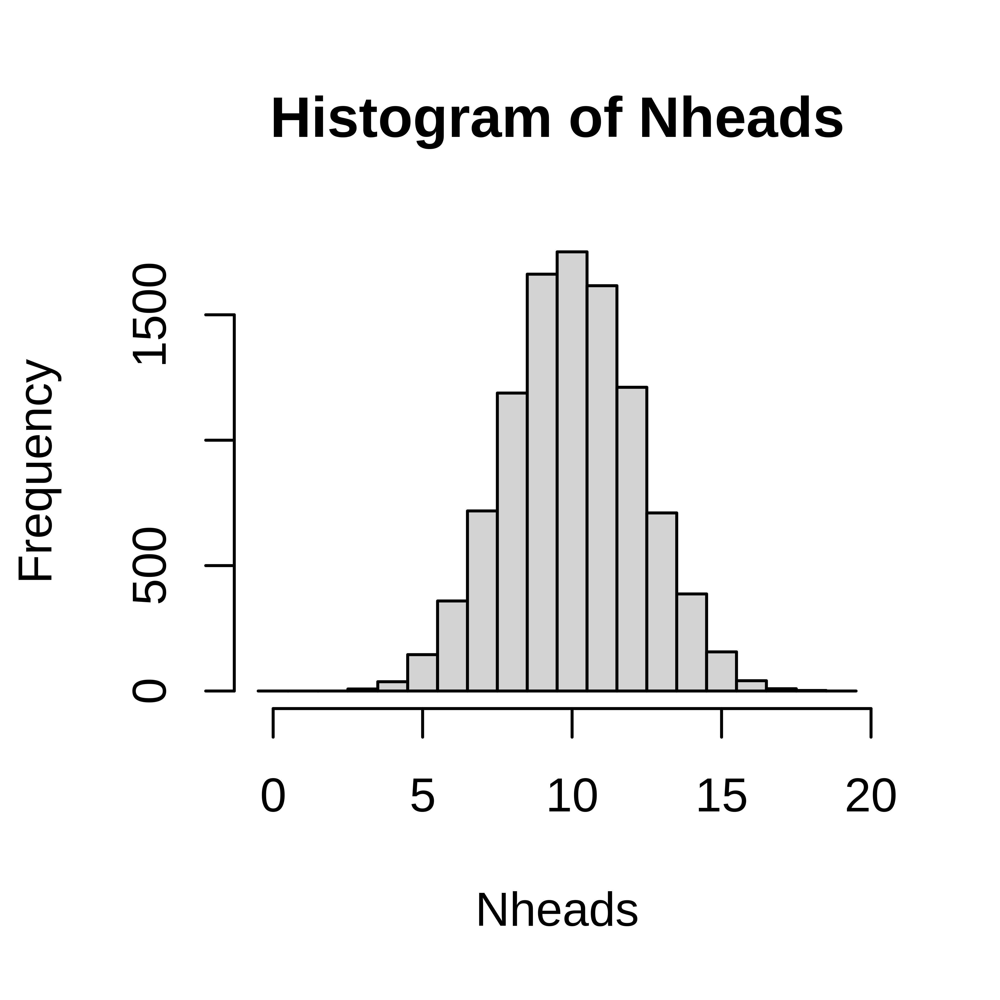
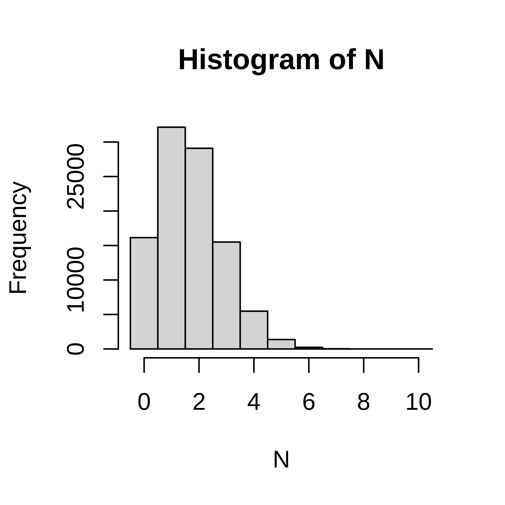
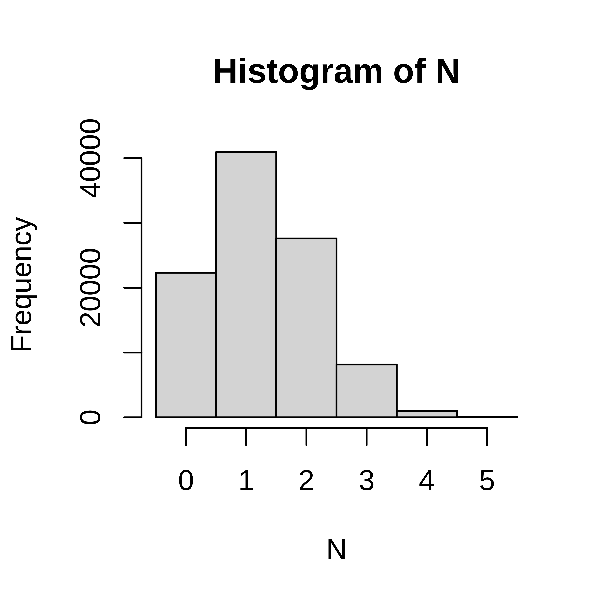

Exercises: Discrete random variables {#prob-exercise-discrv}
Introduction to probability
Exercise 2.2 When tossing a fair six-sided die
- what is the probability of getting 6?
- what is the probability of an even number?
- what is the probability of getting 3 or more?
- what is the expected value of dots on the die?
Simulation
Exercise 2.3 In a single coin toss the probability of heads is 0.5.
In 20 coin tosses,
- what is the probability of exactly 15 heads?
- what is the probability of less than 7 heads?
- What is the most probable number of heads?
- what is the probability of 5 tails or less?
- what is the probability of 2 heads or less?
Exercise 2.4 When rolling 10 six-sided dice, study the number of sixes.
- Define the random variable of interest
- What are the possible outcomes?
- Using simulation, estimate the probability mass function
- what is the probability to get at least 5 sixes?
- Which is the most likely number of sixes?
- What is the probability to get exactly 2 sixes?
- On average how many sixes do you get when throwing ten dice?
Parametric discrete distributions
Exercise 2.11 \iffalse (Gene set enrichment analysis) You have analyzed 20000 genes and a bioinformatician you are collaborating with has sent you a list of 1000 genes that she says are important. You are interested in a particular pathway A. 200 genes in pathway A are represented among the 20000 genes, 20 of these are in the bioinformaticians important list.
If the bioinformatician selected the 1000 genes at random, what is the probability to see 20 or more genes from pathway A in this list?Conditional probability
| pos | neg | tot | |
|---|---|---|---|
| not cancer | 98 | 882 | 980 |
| cancer | 16 | 4 | 20 |
| total | 114 | 886 | 1000 |
the probability of a positive test result from a person with cancer?
the probability of a negative test result from a person without cancer?
the probability of having cancer, if the test is positive?
the probability of not having cancer, if the test is negative?
Connect the four computed probabilities with the following four terms;
- Sensitivity
- Specificity
- Positive predictive value (PPV)
- Negative predictive value (NPV)
Solutions: Discrete random variables
- 0.5
- 0.5
- \(\frac{1}{6}\)
- \(\frac{3}{6} = \frac{1}{2}\)
- \(\frac{4}{6} = \frac{2}{3}\)
- \(1*\frac{1}{6} + 2*\frac{1}{6} + 3*\frac{1}{6} + 4*\frac{1}{6} + 5*\frac{1}{6} + 6*\frac{1}{6} = 3.5\)
Simulate as in the lecture;
# A single coin toss
sample(c("H", "T"), size=1)## [1] "T"# Another coin toss
sample(c("H", "T"), size=1)## [1] "H"# 20 independent coin tosses
(coins <- sample(c("H", "T"), size=20, replace=TRUE))## [1] "H" "H" "T" "T" "T" "T" "H" "T" "H" "H" "H" "T" "T" "H" "T" "T" "H" "H" "T"
## [20] "H"# How many heads did we get in these particular 20 draws?
sum(coins == "H")## [1] 10## The simulation is about repeating this (20 random draws and summing up the number of heads) many times. To do it 10000 times;
Nheads <- replicate(10000, {
coins <- sample(c("H", "T"), size=20, replace=TRUE)
sum(coins == "H")
})- Probability of exactly 15 heads
## Numer of times of the 10000 with exactly 15 heads
sum(Nheads==15)## [1] 156## divide by 10000 to get the probability
sum(Nheads==15)/10000## [1] 0.016## or compute using mean (why does this work?)
mean(Nheads==15)## [1] 0.016- Probability of less than 7 heads
mean(Nheads<7)## [1] 0.055- What is the most probable number of heads?
## plot the distribution and read the graph
hist(Nheads, breaks=0:20-0.5)
## or tabulate
table(Nheads)## Nheads
## 3 4 5 6 7 8 9 10 11 12 13 14 15 16 17 18
## 8 37 145 359 718 1188 1662 1751 1616 1211 710 387 156 41 9 2- What is the probability of 5 tails or less?
To get five or less tails out of 20 throws is equal to getting 15 or more heads out of 20.
## probability of 15 heads or more
mean(Nheads>=15)## [1] 0.021- what is the probability of 2 heads or less?
mean(Nheads<=2)## [1] 0sum(Nheads<=2)## [1] 0## with this low number of observations, more repeats is required to get a more accurate answer
Nheads <- replicate(1000000, {
coins <- sample(c("H", "T"), size=20, replace=TRUE)
sum(coins == "H")
})
sum(Nheads<=2)## [1] 215mean(Nheads<=2)## [1] 0.00021- 0.015
- 0.058
- 10
- 0.020
- 0.0002
- \(X\), the number of sixes when rolling 10 dice.
- \({0, 1, 2, 3, 4, 5, 6, 7, 8, 9, 10}\)
N <- replicate(100000, sum(sample(1:6, size=10, replace=TRUE)==6))
table(N)## N
## 0 1 2 3 4 5 6 7 8
## 16141 32153 29094 15502 5478 1366 234 30 2hist(N, breaks=(0:11)-0.5)
- What is the probability to get exactly 2 sixes?
- On average how many sixes do you get when throwing ten dice?
- 0.015
## [1] 1632## [1] 0.016## [1] 0.016- 1
- 0.29
mean(N==2)## [1] 0.29- 1.7
mean(N)## [1] 1.710*1/6## [1] 1.70.00049
N <- replicate(100000, sum(sample(rep(0:1, c(39,13)), size=5)))
hist(N, breaks=(0:6)-.5)
# P(N==5)
mean(N==5)## [1] 0.00039## Solution using 100 replicates
x <- replicate(100, sum(sample(c(0,0,0,0,0,0,0,1,1,1), size=3, replace=TRUE)))
table(x)## x
## 0 1 2 3
## 42 43 13 2mean(x==0)## [1] 0.42## Solution using 1000 replicates
x <- replicate(1000, sum(sample(c(0,0,0,0,0,0,0,1,1,1), size=3, replace=TRUE)))
table(x)## x
## 0 1 2 3
## 358 429 193 20mean(x==0)## [1] 0.36## Solution using 100000 replicates
x <- replicate(100000, sum(sample(c(0,0,0,0,0,0,0,1,1,1), size=3, replace=TRUE)))
table(x)## x
## 0 1 2 3
## 34253 44113 18927 2707mean(x==0)## [1] 0.34## Solution using 100000 replicates
x <- replicate(100000, sum(sample(rep(c(0, 1), c(14, 6)), size=3, replace=FALSE)))
table(x)## x
## 0 1 2 3
## 32080 47809 18368 1743mean(x==0)## [1] 0.32## Solution using 100000 replicates
x <- replicate(100000, sum(sample(rep(c(0, 1), c(140, 60)), size=3, replace=FALSE)))
table(x)## x
## 0 1 2 3
## 34182 44396 18785 2637mean(x==0)## [1] 0.34Parametric discrete distributions
## 1.6 Solution using the Binomial distribution
pbinom(0, 3, 0.3)## [1] 0.34## 1.7 Solution using the hypergeometric distribution
phyper(0, 6, 20-6, 3)## [1] 0.32## 1.8 Solution using the hypergeometric distribution
phyper(0, 66, 200-60, 3)## [1] 0.31phyper(20, 200, 20000-200, 1000, lower.tail=FALSE)## [1] 0.0011Conditional probability
- \(P(pos|cancer) = 16/20\), sensitivity
- \(P(neg|not cancer) = 882/980\), specificity
- \(P(cancer|pos) = 16/114\), PPV
- \(P(not cancer|neg) = 882/886\), NPV